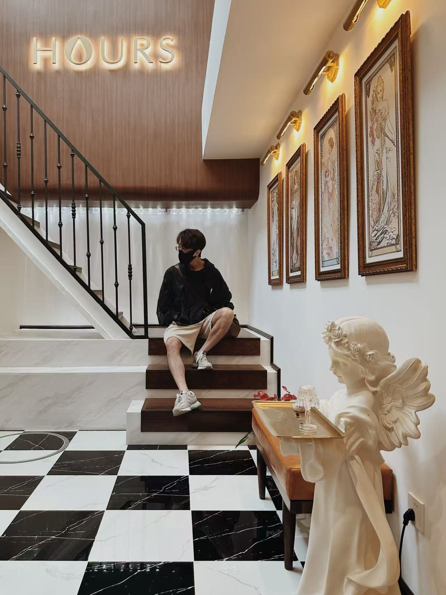

我叫陈昱，室合设计创始人。建筑学出身，做了十多年设计。
这些年，我做过建筑、住宅、商业综合体、咖啡馆、零售和办公；在设计公司待过，带过团队，也自己开过咖啡馆、做过创业者。
这些经历让我越来越确定：好的设计，是做出真正适合使用它的人的空间。
我不只从“设计”看空间
大学五年的建筑学训练，让我习惯从空间、尺度、人的行为和环境关系去思考问题。后来每一段工作与创业经历，又让我多了一个看待空间的角度。
- 在DEEP Architect做建筑，参与798的改造项目，接触机车、咖啡与艺术，开始理解建筑与商业、艺术和城市之间的关系。
- 创业经营精品咖啡馆ASMITTA Coffee，从设计、施工到真正开门营业，站在经营者的角度重新理解空间：好看重要，成本、运营、动线和维护同样重要。
- 在ZWP做大型商业综合体，从助理设计师做到方案设计副总监、西南区负责人，带团队参与洋湖、香醍、东安湖、大江东等项目，积累了龙湖、中海、新城、万达的商业项目经验，也学会了在复杂需求、预算、技术条件和不同专业之间做判断与取舍。
- 2024年创立室合设计，把这些经验带到住宅与商业空间中，回到设计最基本的一件事：理解使用空间的人，解决真实的问题。
室合设计的理念
「适合的，才是合适的。」
这是“室合”这个名字想表达的东西。我不太相信空间设计有一个适用于所有人的标准答案。
同样100㎡的房子，有人需要三个卧室，有人宁愿把一间卧室换成更大的客厅；有人愿意把预算花在一把椅子上，有人更在乎空调、收纳和洗完澡后地面能不能快速干。这些都没有对错。
你的生活方式、审美、家庭关系和预算，都是设计的出发点。我的工作是理解这些需求，包括那些你自己可能还没有意识到的需求，再一起找到适合你的解法。
所以聊设计时，除了喜欢什么风格，我更想先听你说：你平时怎么生活？
我真正提供的，是判断
做设计十几年以后，我越来越觉得，画图只是工作的一部分。一个项目真正困难的地方，往往是那些需要反复权衡的决定：
- 这面墙该不该拆？空间应该留给客厅，还是收纳？
- 预算有限，哪些值得投入，哪些可以简化？
- 一个效果很好看的方案，设备、材料和现场条件能不能支持它落地？
- 设计、设备、施工和柜体发生冲突时，应该调整什么、保留什么？
- 当空间无法满足所有愿望时，哪些需求应该优先？
我的工作，就是帮你把这些问题想清楚，做出有依据的选择。
从需求梳理、空间规划、预算分配，到材料与设备选择、施工配合和最终落地，我始终关心同一件事：这个选择，到底适不适合你。
我能帮你做什么
- 住宅空间：从生活方式和真实需求出发，完成空间规划、室内设计及项目落地。无论小户型改造还是大平层，都一起找到适合这个家长期生活的答案。
- 商业与办公空间：咖啡、零售、办公及商业空间设计。结合大型商业项目与亲自经营咖啡馆的经验，同时考虑空间体验、品牌、运营、成本和落地。
- 设计咨询与项目判断 / 第二意见：如果你已经有设计方案，但对户型、预算、施工或某个关键决策拿不准，也可以单独找我做独立咨询。一起梳理问题、比较选择，不一定需要重新设计，也不必委托完整设计服务。
住宅空间由我亲自主导设计和商务对接，办公、商业等大型项目由工作室团队配合。方案、施工图和工地跟进，也都围绕同一个目标：让设计在现实条件下顺利落地。
说点实在的
比起告诉你应该怎么生活，我更愿意先理解你想怎么生活，再用过去十多年积累的经验，帮你把模糊的想法、复杂的问题和现实的限制，一点一点变成真正能够使用的空间。
空间最后是你在用。我希望项目完成以后，你感受到的是：这个空间，真的适合我。
如果你有空间设计的需求，或想就已有方案听听第二意见，欢迎找我聊聊。
不管最后合不合作，交个朋友也好。
微信：liebechen_n
电话：18610813917
邮箱：y-2cells@outlook.com
—— 陈昱，室合设计